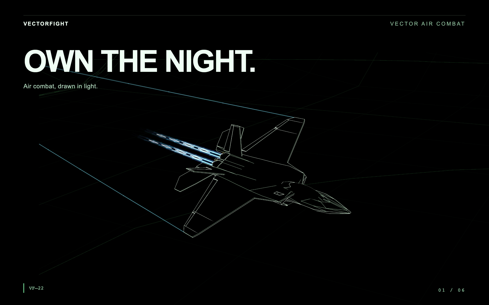
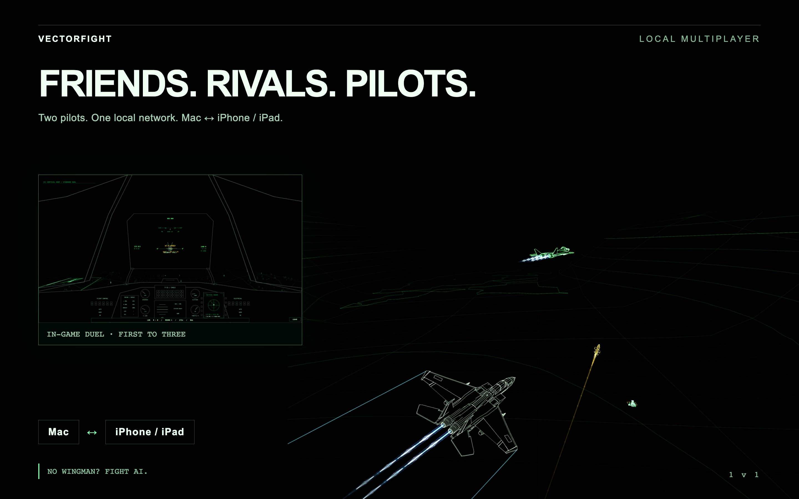
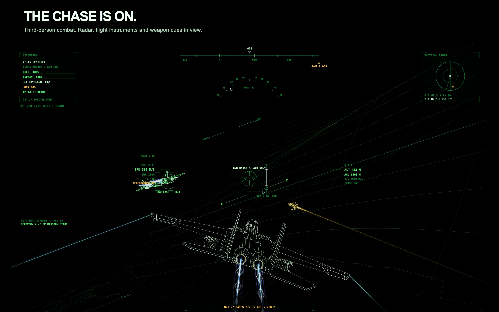

OWN THE NIGHT.
Air combat, drawn in light. Seven airframes. Thirty campaign missions.

Challenge a friend. Across devices.
Two pilots on the same local network. Mac ↔ iPhone / iPad. No wingman available? Challenge AI opponents instead.

The chase is on.

掌控夜空
七款機型、三十場戰役任務。從低空突擊到空中追獵，用速度、高度與時機贏得下一次交鋒。
For iPhone, iPad and Mac. English and Traditional Chinese. A paid game with no advertisements, subscriptions or in-app purchases.